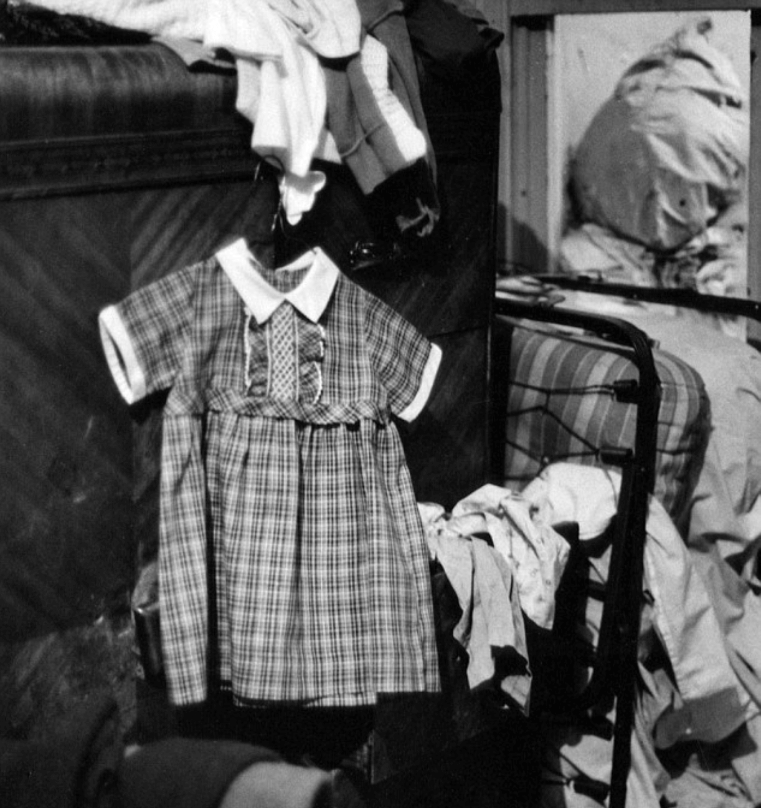

When invited to contribute to this project by Hong-An Truong and Denisse Andrade, I immediately thought of this photograph by the noted photographer Gordon Parks and this passage by professor Robin D. G. Kelley.
“Love, Study, Struggle.” It serves as a daily reminder of what I am supposed to be doing. Black study and resistance must begin with love. James Baldwin understood love-as-agency probably better than anyone. For him it meant to love ourselves as black people; it meant making love the motivation for making revolution; it meant envisioning a society where everyone is embraced, where there is no oppression, where every life is valued—even those who may once have been our oppressors.
More than fifty years after the passage of the Civil Rights Act, the struggle for human rights and equality demands that we revisit the fight for social justice. How does one look back at the activism of 1968 and connect this image by Parks to family love and struggle. In the photograph we see a portrait of a dress worn by a little black girl named Ellen. It hangs on a wire hanger on the edge of a worn wooden bed frame in a cramped and crowded bedroom of the Fontenelle family. It stands in as a portrait of the daughter of the family of eight. It is clean, pressed and starched. I imagine the mother preparing her daughter for school while thinking about protecting her daughter from the insults of oppression and discrimination . I envision that she knew once the plaid cotton dressed was ready she would hang it up as she prepared her five year old daughter Ellen for school. The dress is her armor – its beauty is subtle as it informs the reader that the subplot by Parks was a plea for the viewer to see the humanity in this story. This image may appear to be mundane and less essential to the larger movement for civil and human rights, but look closely and you will begin to imagine the life of the family and the importance of dress and respectability in the late 1960s. The photograph was made in 1967 and published in LIFE in the March 8, 1968 issue to illustrate a story about poverty in New York City.
Gordon Parks begins this story with a short and powerful phrase for the reader to ponder:
What I want
What I am
What you force me to be
Is what you are
For I am You
Staring back from a mirror of poverty
And despair, of revolt and freedom…
When I read these words in the mid 1970s as an undergraduate student, I wanted to meet the photographer immediately. I had known his name from his book A Choice of Weapons and his film The Learning Tree as well as through other photo essays in LIFE but that moment sparked a desire that pushed me forward to reach out to him by writing a letter explaining to him that I wanted to interview him about his photography. Imagine a shy wide-eyed young black woman photographer sending an unsolicited letter to a photographer of his stature! I recall vividly today typing the letter on my portable Olivetti typewriter sitting at my mom’s kitchen table, then handing the letter and addressed envelope to my dad to mail on his way to work. (I found his address with the help of a librarian.) They were both curious and excited for me. Less than a month later, Gordon Parks responded to my letter and invited me to his apartment in an east side apartment building in New York City and gave me the opportunity to interview him.
Over the years I have read numerous of Parks’ books, letters, notes, and articles about his photographic experiences. I have also written about his work, taught his work in my classes and curated his images in over thirty exhibitions. I am intrigued with Parks’ love of images and his own desire to document life in Americafrom from discriminatory practices to family life to sports and the turmoil of the year 1968. The photo session on the Fontenelle family is described on the website of the Gordon Parks Foundation as follows:
In 1968, Life sent three correspondents into the field to document the living conditions that black families endured in America’s ghettos. While his white colleagues Gerald Moore and Jack Newfield produced broad studies of Chicago’s West Side and the Bedford-Stuyvesant section of Brooklyn, Parks concentrated on a single family in Harlem, the Fontenelles…
With winter approaching, British West Indies immigrant Norman Fontenelle, Sr., and his wife, Bessie, were falling short in their efforts to scrape together enough to feed their nine children. Jobless and frustrated, Norman Sr. would drink and then beat Bessie. With no food to offer, Bessie could not prevent her youngest child, three-year-old Richard, from eating the plaster that fell from the walls of their tiny dirt-covered apartment. On Thanksgiving, Parks photographed the family huddled around an empty oven, trying to stave off the cold with their only source of heat.
1968 was a pivotal year in American culture. It was an era when a number of social movements peaked after the assassination of Dr. Martin Luther King, Jr. The photo essay on the Fontenelles was published a month before his death, and was printed as he lectured around the country about his dream of a Beloved Community and on poverty in America. The experiences are forever present in America’s collective memory and now through the stories of immigration and border crossings. Today our world is saturated with iconic images that reflect upon and draw from 1968 and the work of Gordon Parks. Very few show the struggle of little black girls and their invisibility. Parks tried to intervene by finding a family story that would give hope and honor the families who were living in deep despair. He visited the family for seven days without a camera. He helped by paying their rent and buying groceries, and on the eighth day of his return to the four story walk-up in Harlem he carried his camera. He wrote in his diary on November 6, 1967:
Bessie tries to give warmth to the place, but it remains a prison of filth. Her touch shows in the shapeless, soiled curtains; the dime-store paintings on the walls; the shredding scatter rugs covering the cracks in the linoleum; the wax flowers and outdated magazines. It’s a losing battle for her…; and, on November 13th “Bessie insists on homework. ‘They’ve [her children] got to get some kind of education. I’m hoping that just one of them will make it someday. Just one of them and I’ll be thankful.’ It is amazing to see how the kids keep their books stacked so neatly inside all the rubble. During late, quiet moments they help one another with their reading. And for a title while the place seems to be filled with love.
Parks’ intervention in the life of the Fontenelles tells the story of poverty in America, specifically Harlem. He constructs and reveals the experience of the traumatic effect of hunger, lack of education, abuse, and underemployment while at the same time suggests hope, resistance, beauty, and empowerment. Three months later after the essay was published over 50,000 people marched and camped out on the mall in Washington at the Poor People’s March in June of 1968.
Return to the Source reminds us that within the decade of the 1960s, this In the 1960s the nation witnessed an abundance of events that challenged our understanding of war and peace that were bookmarked by the Kennedy-Nixon presidencies, the Vietnam War, the death of Martin Luther King, Jr. and Robert F. Kennedy, and The Civil Rights and Black Power Movements. Civil Rights Act of 1968 and The Fair Housing Act proved to be the high points to an era of youth driven resistance that we see today with the #Black Lives Matter movement.
Highlights of 1968 include:
Shirley Chisholm (D-NY) was the first black woman elected to the U.S. Congress. On January 31st, Viet Cong opened the Tet Offensive by attacking major cities of South Vietnam. On February 15th, Cesar Chaves announced a 25-day fast in response to the violent repression of farm workers. The Brown Berets was formed, creating two chapters, one in Yakima and the other at the University of Washington in Seattle. On April 4th, civil rights leader Martin Luther King, Jr. was shot and killed in Memphis, Tennessee, leading to rebellions in Washington, D.C., Boston, Detroit, Kansas City, and other major cities. President Johnson signed the Civil Rights Act of 1968 on April 11th.
In June, Robert F. Kennedy, former U.S. attorney general and U.S. senator from New York, was assassinated in Los Angeles while campaigning for the Democratic Presidential nomination. At Mexico City's Summer Olympic Games, African American sprinters Tommie Smith and John Carlos won gold and bronze medals, then bowed their heads and raised clenched fists during the performance of the national anthem in protest of racism. In July, the American Indian Movement was founded in Minneapolis, and later the Indian Civil Rights Act. Asian-American students at UC-Berkeley joined a protest in support of Black Panther Huey Newton created their own banner that read "Asian Americans for Justice;" and in November, Richard Nixon was elected President.
Music was also a prolific form of protest that captured the fervor of the time. Many artists decided to use their fame and name to speak out against injustices. Otis Redding’s Sittin’ on the Dock of the Bay was released, The Rascals pledged that People Got to be Free, Sly and the Family Stone proclaimed Dance to the Music, Aretha Franklin told the world to Think, James Brown created a new national pride anthem, Say It Loud, I’m Black and I’m Proud. Johnny Cash recorded Live at Folsom Prison and the Jimi Hendrix Experience released The Watch Tower.